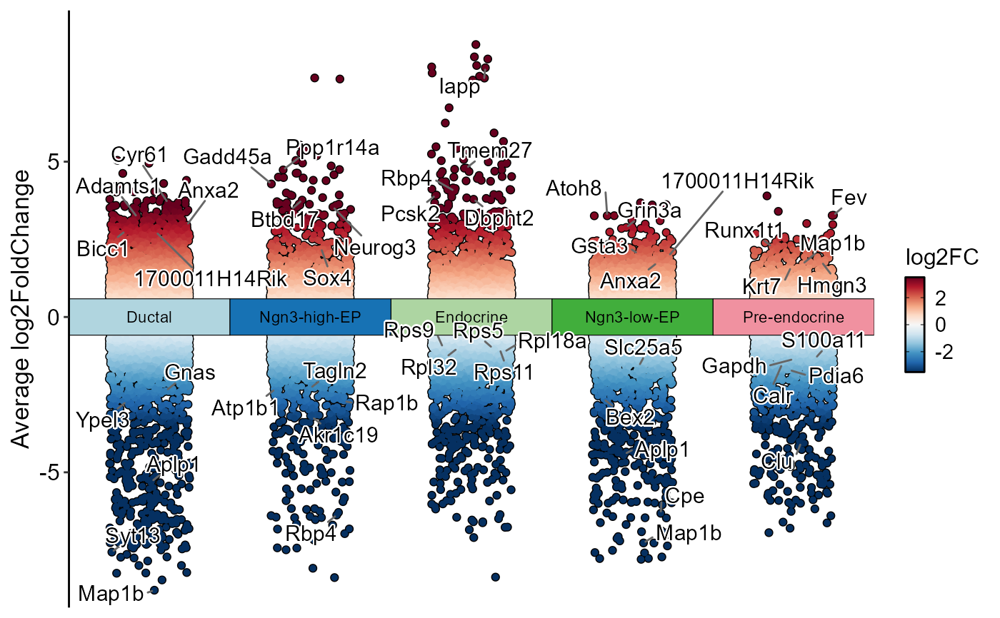

Draw a Manhattan-style plot of differential expression results by cell type.
Usage
DEtestManhattanPlot(
object,
group.by = NULL,
test.use = "wilcox",
res = NULL,
group_use = NULL,
DE_threshold = "avg_log2FC > 0 & p_val_adj < 0.05",
group_palette = "Chinese",
group_palcolor = NULL,
pt.size = 1,
pt.alpha = 1,
cols.highlight = "black",
sizes.highlight = 1,
alpha.highlight = 1,
stroke.highlight = 0.5,
nlabel = 5,
features_label = NULL,
only.pos = FALSE,
label.by = c("p_val_adj", "p_val", "diff_pct", "avg_log2FC"),
label.fg = "black",
label.bg = "white",
label.bg.r = 0.1,
label.size = 4,
palette = "RdBu",
palcolor = NULL,
theme_use = "theme_scop",
theme_args = list(),
manhattan.bg = "white",
group_track_width = NULL,
group_track_height = NULL,
jitter_width = 0.5,
jitter_height = 0,
seed = 11,
aspect.ratio = NULL,
xlab = NULL,
ylab = NULL,
verbose = TRUE,
srt = NULL
)Arguments
- object
A
Seuratobject orSummarizedExperimentobject containing the results of differential expression analysis.- group.by
Metadata column(s) used to color cells.
- test.use
Type of statistical test to use.
- res
A
data.frameordata.tablewith differential expression results. Whenresis provided,objectwill be ignored. The data.frame must contain columns:gene,group1(factor or character),avg_log2FC,p_val_adj, and optionallypct.1andpct.2for calculatingdiff_pct.- group_use
Groups to plot. Default is
NULL(all groups).- DE_threshold
Threshold for differential expression (used to highlight significant genes in all plot types). Default is
"p_val < 0.05"for sample-level methods ("edgeR"and"limma"). For cell-level volcano plots, it is"abs(avg_log2FC) > 0 & p_val_adj < 0.05"whenonly.pos = FALSE, and"avg_log2FC > 0 & p_val_adj < 0.05"otherwise.- group_palette
Palette for cell types (groups) in Manhattan plot.
- group_palcolor
Custom colors for cell types (groups) in Manhattan plot.
- pt.size
The size of the points.
- pt.alpha
Point size and transparency.
pt.size = NULLscales withsqrt(n)(minimum0.3). Rasterized points keep at least a two-pixel radius atraster.dpi = c(512, 512)and scale withraster.dpi.- cols.highlight
Color for highlighted points.
- sizes.highlight
The size of the highlighted points.
- alpha.highlight
The transparency of the highlighted points.
- stroke.highlight
The stroke width for the highlighted points.
- nlabel
An integer value specifying the number of labeled points per group.
- features_label
Feature labels to plot.
- only.pos
Whether to show only positive log2 fold-change results in differential expression visualizations.
- label.by
Metric used to select automatic labels when
features_label = NULL. Options are"p_val_adj","p_val","diff_pct", and"avg_log2FC". Smaller p-values are ranked first;diff_pctandavg_log2FCuse the strongest positive and negative effects within each group.- label.fg
Color for the labels' foreground.
- label.bg
Color for the labels' background.
- label.bg.r
The radius of the rounding of the labels' background.
- label.size
The size of the labels.
- palette
Color palette name. Available palettes can be found in thisplot::show_palettes.
- palcolor
Custom colors used to create a color palette.
- theme_use, theme_args
Theme name or function, plus extra theme arguments.
- manhattan.bg
Background color for Manhattan plot.
- group_track_width
Width of the centered cell-type track in Manhattan plot. Default is
NULL, which uses the current automatic width.- group_track_height
Height of the centered cell-type track in Manhattan plot. Default is
NULL, which uses the current automatic height.- jitter_width
Horizontal jitter range for points in Manhattan plot.
- jitter_height
Vertical jitter range for points in Manhattan plot.
- seed
Random seed for jitter in Manhattan and ring plots.
- aspect.ratio
Aspect ratio of the panel.
- xlab
X-axis label.
- ylab
Y-axis label.
- verbose
Whether to print the message. Default is
TRUE.- srt
Deprecated alias for
object; supply exactly one of the two. It will be removed in scop 1.0.0.
Examples
Examples executed on 2026-10-18 from SCOP main commit 85224cf39.
data(pancreas_sub)
pancreas_sub <- RunStandardWorkflow(pancreas_sub)
#> i [2026-10-18 09:02:43] Start standard processing workflow...
#> i [2026-10-18 09:02:43] Checking a list of <Seurat>...
#> ! [2026-10-18 09:02:44] Data 1/1 of the `srt_list` is "unknown"
#> Warning: Data 1/1 of the `srt_list` is "unknown"
#> i [2026-10-18 09:02:44] Perform `NormalizeData()` with `normalization.method = 'LogNormalize'` on 1/1 of `srt_list`...
#> i [2026-10-18 09:02:44] Perform `FindVariableFeatures()` on 1/1 of `srt_list`...
#> i [2026-10-18 09:02:44] Use the separate HVF from `srt_list`
#> i [2026-10-18 09:02:45] Number of available HVF: 2000
#> i [2026-10-18 09:02:45] Finished check
#> i [2026-10-18 09:02:45] Perform `ScaleData()`
#> i [2026-10-18 09:02:45] Perform pca linear dimension reduction
#> i [2026-10-18 09:02:45] Use stored estimated dimensions 1:23 for Standardpca
#> Warning: package 'future' was built under R version 4.5.3
#> i [2026-10-18 09:02:46] Perform `Seurat::FindClusters()` with `cluster_algorithm = 'louvain'` and `cluster_resolution = 0.6`
#> i [2026-10-18 09:02:46] Reorder clusters...
#> i [2026-10-18 09:02:46] Skip `log1p()` because `layer = data` is not "counts"
#> i [2026-10-18 09:02:46] Perform umap nonlinear dimension reduction
#> v [2026-10-18 09:02:50] Standard processing workflow completed
pancreas_sub <- RunDEtest(
pancreas_sub,
group.by = "CellType",
only.pos = FALSE
)
#> i [2026-10-18 09:02:51] Data type is log-normalized
#> i [2026-10-18 09:02:51] Start differential expression test
#> i [2026-10-18 09:02:51] Find all markers(wilcox) among [1] 5 groups...
#> v [2026-10-18 09:02:51] Differential expression test completed
DEtestManhattanPlot(
pancreas_sub,
group.by = "CellType"
)
